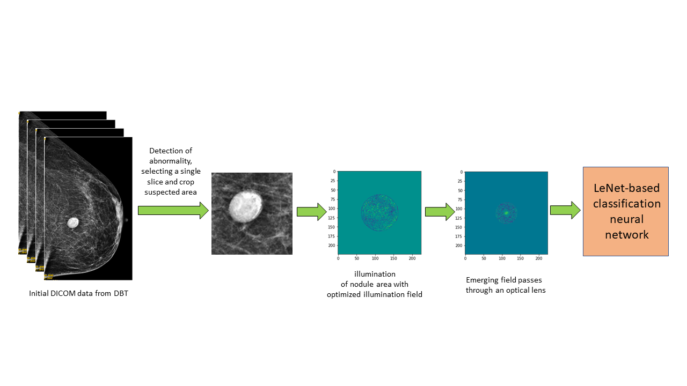

| Paper PDF |

|
Breast cancer is one of the most common forms of cancer in the U.S. Developing an effective deep-learning-based diagnostic model to classify cases of breast cancer would greatly expedite the current screening process. Here, we develop a LeNet-based CNN assisted by an optimized illumination field and an optical filter to classify suspected cancerous tissue in low-dose digital breast tomosynthesis (DBT) images. Real-life low-dose X-ray images are simulated by adding noises into our dataset. The radius of the frequency domain aperture function and the values inside the aperture are used as trainable weights in the neural network; a similar process was performed for the spatial domain illumination pattern. The results indicate that the highest testing accuracy is achieved with noisy images in the absence of any of our proposed physical layers. Such observation demonstrates that adding noise in the training dataset makes the model more generalizable. While our proposed physical layers have limited benefit on the classification accuracy, they significantly improve the readability of images by human eyes and protect the model from overfitting. Our optimized frequency domain layer also reconfirm that low frequency information is much more critical than high frequency ones in classification, and it may serve as a template for optical filter design. Additional link: Digital Breast Tomosynthesis (DBT) Overview. |
|
|
| Paper: |
Code and Data:
|